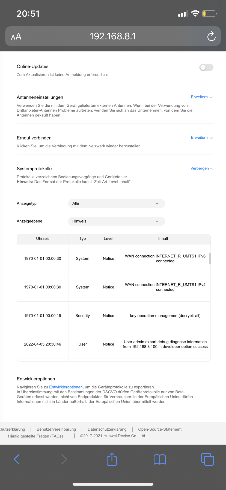

Kann ja sein, dass auch Magenta davon nichts weiß...
Es ist halt auffällig, weil wir beide nach langer Zeit ohne Probleme auf einmal wieder das Phänomen hatten.
Ich kanns mir echt nicht mehr erklären....

Liebe community. Ich hab sei kurzem ein problem mit meinem huawei b 535 modem. Ich nutze mobiles internet. Nun verliert das modem manchmal dem empfang... Die Kontrollleuchte schaltet auf grün ( ethernet) ich hab aber keinen ethernet anschluss. Was kann das sein. Und vielleicht habt ihr noch einen tipp für mich womit ich das eingangssignal verstärken kann. Weil bei mir gibts oft probleme beim empfang. Ich hab aber keine Festnetz-Leitung... Danke schon mal für tipps
Hallo @Michael Rainer und willkommen in der Magenta Community,
vor 30 Minuten schrieb Michael Rainer:Liebe community. Ich hab sei kurzem ein problem mit meinem huawei b 535 modem. Ich nutze mobiles internet. Nun verliert das modem manchmal dem empfang... Die Kontrollleuchte schaltet auf grün ( ethernet) ich hab aber keinen ethernet anschluss. Was kann das sein.
Wenn ich das richtig verstehe, verliert der Router plötzlich den Empfang zum Mobilfunknetz und ein paar Stunden oder Minuten später ist er wieder besser? Oder handelt es sich dabei um die WLAN-Verbindung zu deinem Laptop, Tablet, Smartphone etc. ?
LG
Rexalius
Ist zufällig ein Gerät per Kabel mit dem Lan Port 4 des B535 verbunden?
Denn der Lan Port 4 ist sowohl ein WAN als auch ein LAN Port. Also kann sowohl ein externer Router/Modem oder ein Endgerät (wie ein PC) damit verbunden werden.
Der Lan Port 4 ist ganz rechts, wenn das Gerät von hinten betrachtet wird, welcher auch am weitesten vom Stromanschluss entfernt ist.
Wenn ja und es sollte noch anderer Port frei sein, einfach umstecken und das Problem sollte verschwinden.
Alternativ kannst du über die Konfigurationsseite des B535 unter 192.168.8.1 anmelden ( siehe Anleitung solltest du diese Seite noch die besucht haben) und dann unter "Netzwerkeinstellungen" (oben) -> "Ethernet" (links) -> "Ethernet-Einstellungen" (links) den "Verbindungsmodus" (mitte) auf "Nur LAN" ändern (Speichern nicht vergessen). Damit muss der B535 nicht von selbst herausfinden, ob es sich bei dem an Lan Port 4 angeschlossenen Gerät um ein Endgerät oder einen anderen Internet-Zugang handelt.
Bearbeitet von NTMvor 33 Minuten schrieb NTM:Ist zufällig ein Gerät per Kabel mit dem Lan Port 4 des B535 verbunden?
Denn der Lan Port 4 ist sowohl ein WAN als auch ein LAN Port. Also kann sowohl ein externer Router/Modem oder ein Endgerät (wie ein PC) damit verbunden werden.
Der Lan Port 4 ist ganz rechts, wenn das Gerät von hinten betrachtet wird, welcher auch am weitesten vom Stromanschluss entfernt ist.Wenn ja und es sollte noch anderer Port frei sein, einfach umstecken und das Problem sollte verschwinden.
Alternativ kannst du über die Konfigurationsseite des B535 unter 192.168.8.1 anmelden ( siehe Anleitung solltest du diese Seite noch die besucht haben) und dann unter "Netzwerkeinstellungen" (oben) -> "Ethernet" (links) -> "Ethernet-Einstellungen" (links) den "Verbindungsmodus" (mitte) auf "Nur LAN" ändern (Speichern nicht vergessen). Damit muss der B535 nicht von selbst herausfinden, ob es sich bei dem an Lan Port 4 angeschlossenen Gerät um ein Endgerät oder einen anderen Internet-Zugang handelt.
Nein der lan port 4 ist leer. Und auf der konfig seite kann ich leider keine ethernet einstellung finden....
vor einer Stunde schrieb Rexalius2000:Hallo @Michael Rainer und willkommen in der Magenta Community,
Wenn ich das richtig verstehe, verliert der Router plötzlich den Empfang zum Mobilfunknetz und ein paar Stunden oder Minuten später ist er wieder besser? Oder handelt es sich dabei um die WLAN-Verbindung zu deinem Laptop, Tablet, Smartphone etc. ?
LG
Rexalius
Genauer verliert den empfang. Dann leuchtet das verbindungslicht grün... Nach einem neustart hat er dann wieder empfang
Hast du den Router schon mal auf Werkseinstellungen zurückgesetzt?
Denn nur wenn ein Gerät an Lan Port 4 angeschlossen ist, sollte es, unter normalen Bedingungen, zu dem von dir beschriebenen Problem kommen.
Auf werkseinstellungen hab ich noch nicht gestellt. Hab aber noch nie beim lan port 4 was angeschlossen....
Versuch mal wie von @NTM erwähnt, deinen Router zu resetten.
Hallo,
Ich hab das selbe Problem seit ein paar Wochen. Immer wieder habe ich kein WLAN und jedesmal ist dann das Licht grün. Erst nach dem Ausstecken und Anstecken des Stromkabels findet es wieder eine Verbindung. Habe den Router seit 1 1/2 Jahren und bis vor ein paar Wochdn ging alles reibungslos. Ich habe nie ein LAN Kabel angesteckt oder sonst was verändert.
Danke schon mal für eure Tipps und Hilfestellungen.
Liebe Grüße Kathi
Bearbeitet von Kathi07
Wartet mal!!!!
Ich hab das Problem nämlich auch und zwar genauso, wir ihr das beschreibt. Ich hab den gleichen Router und auf einmal leuchtet die EmpfangsLED grün und es geht nichts mehr. Nach dem Restart ist alles wieder fein.
Ich glaub fast, da ist ein fehlerhafter Update schuld, denn ich hab das hier in der Community schon häufiger gelesen.
Was mir noch aufgefallen ist - wenn die LED grün leuchtet, leuchten alle anderen LED's dauerhaft.
Es macht für mich den Eindruck, als ob sich das OS des Routers da aufgehängt hat.
Am 8.2.2022 um 17:13 schrieb Michael Rainer:Liebe community. Ich hab sei kurzem ein problem mit meinem huawei b 535 modem. Ich nutze mobiles internet. Nun verliert das modem manchmal dem empfang... Die Kontrollleuchte schaltet auf grün ( ethernet) ich hab aber keinen ethernet anschluss. Was kann das sein. Und vielleicht habt ihr noch einen tipp für mich womit ich das eingangssignal verstärken kann. Weil bei mir gibts oft probleme beim empfang. Ich hab aber keine Festnetz-Leitung... Danke schon mal für tipps
Empfangssignal verstärken geht nur mit einer externen Antenne.
Aber da kannst dann wirklich einiges rausholen. Nur muss man da mit 2 Kabeln irgendwie raus kommen.
Hast du da eine Möglichkeit?
Ich schließe mich dieser Frage an. Ebenfalls grün leuchtende Netzwerkstatus Anzeige! Kein Internet bis der Router neu gestartet wird. Das ist sehr problematisch wenn man auf Fernzugriff auf das Heimnetzwerk angewiesen ist, weil aus der Ferne kann man schlecht neu starten.
Spannend!
Danke für die Rückmeldung. Ich denke da müssen wir bei Magenta selbst aktiv werden. Ich bin mir immer mehr sicher, dass da ein fehlerhafter Update der Box Schuld ist.
Könnt ihr mal eure Software Version posten? Findet sich im Router Menü unter Erweitert/System/Geräteinformationen.
Ich habe:
Software-Version
11.0.1.2(H200SP3C55)
Am 8.2.2022 um 19:55 schrieb Rexalius2000:Versuch mal wie von @NTM erwähnt, deinen Router zu resetten.
Das Problem muss doch auch irgendwie anders zu lösen sein. Besonders wen es öfter auftritt. Wie soll man aus der Ferne (Fernzugriff wird benötigt) den Router zu resetten?
vor 37 Minuten schrieb Christian_E:Spannend!
Danke für die Rückmeldung. Ich denke da müssen wir bei Magenta selbst aktiv werden. Ich bin mir immer mehr sicher, dass da ein fehlerhafter Update der Box Schuld ist.
Könnt ihr mal eure Software Version posten? Findet sich im Router Menü unter Erweitert/System/Geräteinformationen.
Ich habe:Software-Version
11.0.1.2(H200SP3C55)
Ebenfalls 11.0.1.2(H200SP3C55)
Bearbeitet von charly2011
Jetzt wäre es mal spannend, ob es da eine Modifikation gegeben hat und wann.
Ich bleib da mal dran.
vor 47 Minuten schrieb charly2011:Das Problem muss doch auch irgendwie anders zu lösen sein. Besonders wen es öfter auftritt. Wie soll man aus der Ferne (Fernzugriff wird benötigt) den Router zu resetten?
Das ginge dann nur noch mit einer mechanischen Zeitschaltuhr, die den Router einmal am Tag neustartet.
Aber das ist natürlich keine Lösung - max. für die Zwischenzeit ein Workaround.
vor einer Stunde schrieb charly2011:Ebenfalls 11.0.1.2(H200SP3C55)
Ich hab auch diese Version.
Danke für das Feedback!
Was ich mal gefunden habe - es handelt sich aktuell um die letzte Firmware und damit haben wir alle die aktuellste drauf.
Jetzt wäre mal wichtig zu eruieren, wann hängt sich der Router auf?
Hängt er sich von alleine auf oder bei Last?
Das hab ich bei mir noch nicht rausgefunden.
Betreibt ihr den Router ganz normal oder habt ihr mehrere Bänder gebündelt?
vor 1 Stunde schrieb Christian_E:Spannend!
Danke für die Rückmeldung. Ich denke da müssen wir bei Magenta selbst aktiv werden. Ich bin mir immer mehr sicher, dass da ein fehlerhafter Update der Box Schuld ist.
Könnt ihr mal eure Software Version posten? Findet sich im Router Menü unter Erweitert/System/Geräteinformationen.
Ich habe:Software-Version
11.0.1.2(H200SP3C55)
Hy. Also ich hab restet. Und nun seit 1 woche kein ausfall mehr.... Hab jetzt auch die version 11.0.1.2. Ich hoffe mal es bleibt so
vor 2 Minuten schrieb Christian_E:Was ich mal gefunden habe - es handelt sich aktuell um die letzte Firmware und damit haben wir alle die aktuellste drauf.
Jetzt wäre mal wichtig zu eruieren, wann hängt sich der Router auf?
Hängt er sich von alleine auf oder bei Last?
Das hab ich bei mir noch nicht rausgefunden.
Betreibt ihr den Router ganz normal oder habt ihr mehrere Bänder gebündelt?
Also mein router hat sich meistens in der nacht aufgehängt
Also kompletten Reset auf Werkseinstellungen oder?
Gut, wenn sich das dann so lösen lässt, wäre das natürlich super.
Bitte berichte uns weiter, ob es bei dir stabil bleibt.
Gerade eben schrieb Michael Rainer:Also mein router hat sich meistens in der nacht aufgehängt
Ja vom Gefühl her bei mir auch aber ganz sicher bin ich mir nicht.
vor 1 Minute schrieb Christian_E:Also kompletten Reset auf Werkseinstellungen oder?
Gut, wenn sich das dann so lösen lässt, wäre das natürlich super.
Bitte berichte uns weiter, ob es bei dir stabil bleibt.Ja vom Gefühl her bei mir auch aber ganz sicher bin ich mir nicht.
Ja ich hab komplett auf werkseinstellungen zurückgesetzt. Wenn sich was ändert schreib ich wieder... Aber ich hoffe mal es bleibt so
Passt Danke für die Rückmeldung!
vor 1 Stunde schrieb Michael Rainer:Also mein router hat sich meistens in der nacht aufgehängt
Meiner zu beliebiger Zeit. heute vormittag das letzte Mal
Liebe community. Ich hab sei kurzem ein problem mit meinem huawei b 535 modem. Ich nutze mobiles internet. Nun verliert das modem manchmal dem empfang... Die Kontrollleuchte schaltet auf grün ( ethernet) ich hab aber keinen ethernet anschluss. Was kann das sein. Und vielleicht habt ihr noch einen tipp für mich womit ich das eingangssignal verstärken kann. Weil bei mir gibts oft probleme beim empfang. Ich hab aber keine Festnetz-Leitung... Danke schon mal für tipps
@charly2011
Dann wäre das bei dir mal perfekt zu testen, ob es Verbesserungen gibt, wenn du deinen Router auf Werkseinstellungen zurücksetzt.
Wäre das möglich?
Dann hätten wir gleich ein gutes Feedback.
Meiner hängt sich zwar auch auf aber nicht so oft.
vor 15 Stunden schrieb Christian_E:@charly2011
Dann wäre das bei dir mal perfekt zu testen, ob es Verbesserungen gibt, wenn du deinen Router auf Werkseinstellungen zurücksetzt.
Wäre das möglich?
Dann hätten wir gleich ein gutes Feedback.
Meiner hängt sich zwar auch auf aber nicht so oft.
Ich habe mich lange herumgespielt bis alle Einstellungen richtig, und Gerätenamen ordentlich zugeordnet waren. Ich möchte das eigentlich nicht zurücksetzen, wenn es sich vermeiden lässt. Meine Hoffnung liegt jetzt darin, dass es sich tatsächlich um ein fehlerhaftes Update handelt, dass rasch von Magenta berichtigt wird. Ich würde also gern noch ein paar Tage warten, bis ich alles zurücksetze.
Ja verstehe ich...
Gut dann beobachte bitte weiter und notiere bitte mal die Zeiten, wann und wie oft sich dein Router aufhängt.
Ich werde mal bei der Hotline dran bleiben.
Hallo, ich habe nach genau einem Jahr problemlosem Dienst meines B535 plötzlich das gleiche Problem. Der Router friert mehrmals täglich ein, alle led leuchten und die Netz led schaltet von blaugrün auf grün.
nach mehrfachen Telefonaten mit dem tech support und allen erdenklichen Einstellungsänderungen, sowie komplett reset (ganz toll) war das Problem noch immer da.
Im Shop habe ich nach viel diskutieren trotz Bestätigung vom tech support dann ein komplett verdrecktes Ersatz B535 bekommen.
Nach dem einrichten mit vorherigem komplett reset, ist der Ersatz Router ebenfalls abgestürzt.
Der einzige tip im Shop war SIM Karte tauschen.
Ich habe dann meine sim Karte zum Testen, und weil ich unbedingt Internet benötige, in meinen alten Huawei B315s gesteckt und das funktioniert tadellos.
Spannend - Danke für die Rückmeldung.
Evtl. ein Kontaktproblem mit den Sim's???
Dann nimm ich die mal einfach raus und steck sie wieder rein - vielleicht kann das schon die Lösung sein?
@charly2011
Kannst du das bitte mal probieren?
vor 1 Stunde schrieb Christian_E:Ja verstehe ich...
Gut dann beobachte bitte weiter und notiere bitte mal die Zeiten, wann und wie oft sich dein Router aufhängt.
Ich werde mal bei der Hotline dran bleiben.
Ich habe den Rat befolgt, dass ich den Router als Zwischenlösung auf eine Zeitschaltuhr schließe. Er startet daher um etwa 3h Nachts neu. Das hat funktioniert. Seither kein Ausfall mehr. Ist hat nur eine Zwischenlösung. Es hat definitiv nichts damit zu tun, dass in dem Moment irgendwas besonderes im Heimnetzwerk gemacht wurde (Downloads, Streaming etc.) Einige Male war untertags niemand zu Hause und der Fernzugriff war nicht möglich. Man kann dann natürlich auch nicht auf die IP zugreifen um irgendwas neu zu starten. Es geht definitiv nur wenn man vor Ort kurz den Stecker zieht.
vor 1 Minute schrieb charly2011:Ich habe den Rat befolgt, dass ich den Router als Zwischenlösung auf eine Zeitschaltuhr schließe. Er startet daher um etwa 3h Nachts neu. Das hat funktioniert. Seither kein Ausfall mehr. Ist hat nur eine Zwischenlösung. Es hat definitiv nichts damit zu tun, dass in dem Moment irgendwas besonderes im Heimnetzwerk gemacht wurde (Downloads, Streaming etc.) Einige Male war untertags niemand zu Hause und der Fernzugriff war nicht möglich. Man kann dann natürlich auch nicht auf die IP zugreifen um irgendwas neu zu starten. Es geht definitiv nur wenn man vor Ort kurz den Stecker zieht.
Hast du das mit der SIM gelesen?
Evtl. haben wir bei diesem Router auch ein Kontaktproblem mit der SIM.
Das wäre nicht viel Aufwand, die mal rauszuziehen und wieder rein zu stecken.
Evtl. hilft es ??
vor 9 Minuten schrieb Christian_E:Spannend - Danke für die Rückmeldung.
Evtl. ein Kontaktproblem mit den Sim's???
Dann nimm ich die mal einfach raus und steck sie wieder rein - vielleicht kann das schon die Lösung sein?
@charly2011
Kannst du das bitte mal probieren?
Beim kurzen Ausstecken und wieder Einstecken müsste dann doch das Problem weiter bestehen, oder? Die Ausfallzeiten waren unterschiedich von untertags bis Abends
Naja - kann ja sein, dass bei diesem Router die SIM Kontakte evt. ein Problem machen.
Wäre eine Erklärung und vielleicht hat ein Update dazu beigetragen.
Probieren kann man das ja mal...
Der sim Kontakt ist nicht das Problem.
Habe ich überprüft, außerdem würde eine neue sim das Problem ja auch nicht ändern da es ja bei vielen Geräten auftritt, interessant ist das es erst seit Ende Jänner 2022 erst auftritt.
Würde auf ein fehlerhaftes Software Update hindeuten.
das Angebot sie zu tauschen kommt von ahnungslosen Mitarbeitern welche keinerlei Handhabe besitzen.
vor 2 Minuten schrieb Christian_E:Naja - kann ja sein, dass bei diesem Router die SIM Kontakte evt. ein Problem machen.
Wäre eine Erklärung und vielleicht hat ein Update dazu beigetragen.
Probieren kann man das ja mal...
SIM rausgenommen - sieht alles gut und sauber aus - wieder rein getan. Ich werds im Auge behalten
vor 2 Minuten schrieb charly2011:SIM rausgenommen - sieht alles gut und sauber aus - wieder rein getan. Ich werds im Auge behalten
super Danke!
vor 7 Minuten schrieb Greeneye:Der sim Kontakt ist nicht das Problem.
Habe ich überprüft, außerdem würde eine neue sim das Problem ja auch nicht ändern da es ja bei vielen Geräten auftritt, interessant ist das es erst seit Ende Jänner 2022 erst auftritt.
Würde auf ein fehlerhaftes Software Update hindeuten.
das Angebot sie zu tauschen kommt von ahnungslosen Mitarbeitern welche keinerlei Handhabe besitzen.
Ja stimmt - kann ich bestätigen. Das Problem gibts noch nicht lange....
Ich hab bei mir nun auch mal die SIM raus genommen und wieder reingesteckt. Ich beobachte und protokoliere, was jetzt passiert.
Interessant - beim Einschalten leuchte auch alle LED kurz mal auf und die VerbindungsLED ist grün - also selbes Bild, das sich zeigt, wenn der Router abstürzt.
Hallo, ich hab vor ein paar Tagen den Router 2x resetet (Resetknopf gedrückt) und seither gab es keine Probleme mehr. Ich hoffe es bleibt so.
Danke für die Info.
Das wäre natürlich super wenn das Problem so gelöst werden kann. Halt uns trotzdem bitte noch am laufenden, ob es dauerhaft nun bei dir klappt. Danke.
Am 21.2.2022 um 10:51 schrieb Christian_E:super Danke!
Ja stimmt - kann ich bestätigen. Das Problem gibts noch nicht lange....
wieder abgestürzt. SIM reinigen hat nichts gebracht
vor 35 Minuten schrieb charly2011:wieder abgestürzt. SIM reinigen hat nichts gebracht
Oje Danke für die Info.
Dann warten wir mal ab, ob der HW Reset bei
@Kathi07
was bringt...
@Kathi07
Wie läuft es bei dir?
Seit dem ich die SIM einmal raus und wieder rein gegeben habe, konnte ich keinen Absturz mehr beobachten. Das ist jetzt immerhin 10 Tage her.
Komisch - im Moment lässt sich das Problem wirklich nur schwer eingrenzen...
Wenn es allerdings bei allen nun wieder läuft, kann es auch ein Thema von außen sein???
Am 1.3.2022 um 07:40 schrieb Christian_E:@Kathi07
Wie läuft es bei dir?
Seit dem ich die SIM einmal raus und wieder rein gegeben habe, konnte ich keinen Absturz mehr beobachten. Das ist jetzt immerhin 10 Tage her.
Komisch - im Moment lässt sich das Problem wirklich nur schwer eingrenzen...
Wenn es allerdings bei allen nun wieder läuft, kann es auch ein Thema von außen sein???
Bis vor 4 Tagen gab es keine Probleme mehr. Leider ist es jetzt wieder anders. Heute sogar innerhalb von 2 Stunden 2x ausgefallen.
Das mit der SIM werde ich jetzt auch mal probieren.
Oje schade. Danke für die Info.
Bei mir läuft der Router nach wie vor ohne Probleme.
Am 20.2.2022 um 13:52 schrieb Christian_E:Also kompletten Reset auf Werkseinstellungen oder?
Gut, wenn sich das dann so lösen lässt, wäre das natürlich super.
Bitte berichte uns weiter, ob es bei dir stabil bleibt.Ja vom Gefühl her bei mir auch aber ganz sicher bin ich mir nicht.
Hy. Bisher verlief alles super. Bis heute.... Da hat sich der router wieder aufhehängt... Aus uns einstecken und läuft wieder. Es is zum verzweifeln....
Am 20.2.2022 um 13:55 schrieb Christian_E:Passt Danke für die Rückmeldung!
So bis heute lief alles super. Aber heute nacht is es wieder passiert. In der früh leuchtet das modem grün... Aus und einstecken und geht wieder.... Nervt einfach....
vor 2 Stunden schrieb Michael Rainer:So bis heute lief alles super. Aber heute nacht is es wieder passiert. In der früh leuchtet das modem grün... Aus und einstecken und geht wieder.... Nervt einfach....
Sehr interessant.
Bei mir das gleiche - allerdings ist es am Vormittag passiert. Ob es da nicht einen anderen Zusammenhang gibt, denn mein Modem ist nun wochenlang ohne Probleme gelaufen - bis heute....
Evtl. ein Problem bei Magenta was unsere Modems beeinflusst?????????????
vor einer Stunde schrieb Christian_E:Sehr interessant.
Bei mir das gleiche - allerdings ist es am Vormittag passiert. Ob es da nicht einen anderen Zusammenhang gibt, denn mein Modem ist nun wochenlang ohne Probleme gelaufen - bis heute....
Evtl. ein Problem bei Magenta was unsere Modems beeinflusst?????????????
Hab nichts von problemen gelesen.... Aber nach dem neustart is mir aufgefallen das ich nur 2 striche empfang hatte... Vielleicht war ja wirklich war bei magenta... Ich beobachte mal weiter....
Liebe community. Ich hab sei kurzem ein problem mit meinem huawei b 535 modem. Ich nutze mobiles internet. Nun verliert das modem manchmal dem empfang... Die Kontrollleuchte schaltet auf grün ( ethernet) ich hab aber keinen ethernet anschluss. Was kann das sein. Und vielleicht habt ihr noch einen tipp für mich womit ich das eingangssignal verstärken kann. Weil bei mir gibts oft probleme beim empfang. Ich hab aber keine Festnetz-Leitung... Danke schon mal für tipps
Kann ja sein, dass auch Magenta davon nichts weiß...
Es ist halt auffällig, weil wir beide nach langer Zeit ohne Probleme auf einmal wieder das Phänomen hatten.
Ich kanns mir echt nicht mehr erklären....

vor 1 Minute schrieb Christian_E:Kann ja sein, dass auch Magenta davon nichts weiß...
Es ist halt auffällig, weil wir beide nach langer Zeit ohne Probleme auf einmal wieder das Phänomen hatten.
Ich kanns mir echt nicht mehr erklären....
Ich hoffe mal das es die ausnahme bleibt.....
vor 3 Minuten schrieb Christian_E:Kann ja sein, dass auch Magenta davon nichts weiß...
Es ist halt auffällig, weil wir beide nach langer Zeit ohne Probleme auf einmal wieder das Phänomen hatten.
Ich kanns mir echt nicht mehr erklären....
Bist du auch aus kärnten?
vor 57 Minuten schrieb Michael Rainer:Bist du auch aus kärnten?
Nein aus OÖ
vor 59 Minuten schrieb Michael Rainer:Ich hoffe mal das es die ausnahme bleibt.....
Bleib bitte dran und halten wir uns gegenseitig am Laufenden.
mal schauen, ob es das nächste Mal wieder am selben Tag ist....
vor 20 Stunden schrieb Christian_E:Sehr interessant.
Bei mir das gleiche - allerdings ist es am Vormittag passiert. Ob es da nicht einen anderen Zusammenhang gibt, denn mein Modem ist nun wochenlang ohne Probleme gelaufen - bis heute....
Evtl. ein Problem bei Magenta was unsere Modems beeinflusst?????????????
Bei mir genau das Gleiche. In der Nacht von 19. auf 20. März abgestürzt. Damit dürfte waohl klar sein dass diese Abstürze von Magenta hervorgerufen werden.
Danke für das Feedback!
Ja mittlerweile gehe ich davon aus, dass das Modem was empfängt, das es zum Absturz bringt.
Ich denke das ist eine sehr wertvolle Info und sollte nun von Magenta aufgegriffen werden.
Es sieht tatsächlich so aus, dass unsere Modems von "außen" zum Absturz gebracht werden können. Das ist schräg aber offenbar Fakt.
Bloss - was machen wir nun?
vor einer Stunde schrieb Christian_E:Danke für das Feedback!
Ja mittlerweile gehe ich davon aus, dass das Modem was empfängt, das es zum Absturz bringt.
Ich denke das ist eine sehr wertvolle Info und sollte nun von Magenta aufgegriffen werden.
Es sieht tatsächlich so aus, dass unsere Modems von "außen" zum Absturz gebracht werden können. Das ist schräg aber offenbar Fakt.
Bloss - was machen wir nun?
Jeder einzelne sollte telefonischen Kontakt mit dem Support von Magenta aufnehmen. Wenn es mehrere melden, sollten sie das nicht ignorieren. Ich ruf gleich an.
Ja ich werde auch wieder anrufen. Gute Idee!
Im Prinzip ist das eine sehr wertvolle Info für Magenta - die Technik hat da vielleicht ja eine Idee.
Sagst uns Bescheid, was an der Hotline raus gekommen ist?
wie leider befürchtet kommen Aussagen nach "Liste". Nach längerem freundlichen Telefonat mit dem Technischen Support hat man den Eindruck er kann auf das Problem nicht im Detail eingehen, weil es nicht auf der Liste steht. Wurde an Fremdfirma "Helferlein" verwiesen. Angebote sollte dadurch keine Lösung gefunden werden: Simkarte tauschen, Router zur Überprüfung einschicken.
Ich hatte beim letzte Mal "mehr Glück".
Da wurde das Thema aufgenommen und ein Rückruf versprochen. Der kam dann auch und es wurde alles genau abgefragt.
Leider hab ich seitdem nichts mehr gehört und weiß nicht, was da letztendlich gemacht wird.
Aber klar - das Thema ist komplex und echt nicht einfach zu erfassen.
Ich denke wir sind schon weiter gekommen - wahrscheinlich aber wird das Thema kaum eine hohe Prio finden, weil es eben schon wieder ganz andere und neuere Modems gibt....

Leider heute um ca.8 Uhr wieder ein Ausfall - das Modem hat sich erneut aufgehängt und die LED ging auf grün...
Bin leider schon um 6 in die arbeit gefahren.. Da ging noch alles... Werde gleich wenn ich daheim bin kontrollieren und rückmelden....
Danke, ja würde mich interessieren...
Am 24.3.2022 um 09:04 schrieb Christian_E:Danke, ja würde mich interessieren...
Hy. Heute isses bei mir wieder passiert. Zwischen mitternacht und 7 uhr früh. Lg
Komisch. Diesesmal bei mir nicht. Das ganze folgt einfach keinem richtigen Muster. 😐
vor 3 Stunden schrieb Christian_E:Komisch. Diesesmal bei mir nicht. Das ganze folgt einfach keinem richtigen Muster. 😐
Aus meinem Gespräch mit der Magenta Service Line konnte ich entnehmen, dass es mit (Um)- Schaltungen von Sendeanlagen zu tun haben könnte. Z.B. Der Sender bei dem sich das Modem eingewählt hat, wird wegen Wartung oder sonst was kurz (auch Millisekunden) abgeschalten, und einige Modems von diesem Typ können sich nicht mehr fehlerfrei anmelden und reagieren möglicherweise so darauf. Das wäre die Erklärung warum es nicht regelmäßig und überall gleichzeitig passiert. In meinem Fall war nichts auf den Protokollen zu sehen, aber ich konnte auch nicht den ganz genauen Zeitpunkt nennen. Es wurden 5G Maßnahmen als Beispiel Gründe einer kurzen (Aus- Um-)Schaltung erwähnt. Da es aber nicht alle Modems (und Tarife!) betrifft, ist ein genereller Austausch nicht geplant.
Interessanter Ansatz und würde auch plausibel klingen.
Dass das Modem da gar nicht mehr raus findet könnte sicher mit einem Update gelöst werden aber dafür gibt Huawei oder Magenta sicher kein Geld mehr aus, weil dieses Modem schon älter ist...
vor 13 Minuten schrieb Christian_E:Interessanter Ansatz und würde auch plausibel klingen.
Dass das Modem da gar nicht mehr raus findet könnte sicher mit einem Update gelöst werden aber dafür gibt Huawei oder Magenta sicher kein Geld mehr aus, weil dieses Modem schon älter ist...
Wenn man auf die weboberfläche des roiters geht dann unter mein gerät, systemeinstellumgen, systemprotokolle kann mananscheinend auch fehler herauslesen... Ich hab da mal einen screenshot gemacht und protokolliere das genau....
Bearbeitet von Michael Rainer
Super Danke!
Interessant ist aber, dass mein Router zuvor ganz problemlos gelaufen ist. Die Ausfälle sind erst irgendwann im letzten Jahr aufgetreten.
Aber super, dass du dir das mit den Logfiles näher ansiehst. Vielleicht bekommen wir so noch konkretere Hinweise. Ich werde das bei mir auch mal beobachten.
vor einer Stunde schrieb Christian_E:Super Danke!
Interessant ist aber, dass mein Router zuvor ganz problemlos gelaufen ist. Die Ausfälle sind erst irgendwann im letzten Jahr aufgetreten.
Aber super, dass du dir das mit den Logfiles näher ansiehst. Vielleicht bekommen wir so noch konkretere Hinweise. Ich werde das bei mir auch mal beobachten.
Vielleicht hängt das ganze ja mit einem update zusammen? Ich beobachte und dokumentiere mal. Im grunde ist es ja nicht so schlimm weil sich die ausfälle eh in grenzen halten und einfach zu beheben sind. Nervt mich halt einfach und ich mag solche sachen nicht.... Mal schauen wies weitergeht. Bis zum nächsten absturz. Lg aus kärnten
Ja geht mir genauso. Ich glaub auch, dass es ein Update war.
Schlimm ist es auch bei mir nicht aber wenn man unterwegs ist und es hängen ein paar SmartHome Geräte dran, dann ist das schon blöd, denn die laufen ja erst wieder, wenn jemand das Modem startet und das ist dann nicht möglich, solange man eben nicht anwesend ist.
Ich war bis jetzt stiller Mitleser der Diskussion aber mittlerweile wirds mir zu anstrengend meinen Router 1-5x pro Tag abzustecken. Das einzige was mir dabei aufgefallen ist, ist dass jedes mal kurz vor einem Ausfall eine Meldung im Systemprotokoll auftaucht, die auf 1970 datiert ist. 
Habe das gleiche Problem hatte den Router eingeschickt. Angeblich wurde er neu aufgesetzt und Blabla. Zuerst dachte ich da Problem ist gelöst aber nach ca 1 Woche ging es schon wieder los. Erst nur vereinzelt heute gleich 3Mal. Bei dem Servicepartner war natürlich kein Fehler zu finden. Hoffe es gibt bald einen vernünftigen Ansatz zur Lösung des Problems.
Liebe community. Ich hab sei kurzem ein problem mit meinem huawei b 535 modem. Ich nutze mobiles internet. Nun verliert das modem manchmal dem empfang... Die Kontrollleuchte schaltet auf grün ( ethernet) ich hab aber keinen ethernet anschluss. Was kann das sein. Und vielleicht habt ihr noch einen tipp für mich womit ich das eingangssignal verstärken kann. Weil bei mir gibts oft probleme beim empfang. Ich hab aber keine Festnetz-Leitung... Danke schon mal für tipps
Interessant. Bei mir gestern kein Problem.
Ist wohl wirklich irgendwie abhängig von Regionen und Sendemasten, die möglicherweise den Router zum Kippen bringen.
In der letzten Nacht ist mein Modem wieder gekippt und hat sich aufgehängt.
Also die Probleme gehen weiter und es gibt offenbar immer noch keine Lösung.
vor einer Stunde schrieb Christian_E:In der letzten Nacht ist mein Modem wieder gekippt und hat sich aufgehängt.
Also die Probleme gehen weiter und es gibt offenbar immer noch keine Lösung.
Sch...... Bei mir war nix.... Mal sehen wann mein modem wieder drann ist...
Ja gibt leider keinen Anhaltspunkt im Moment warum das passiert.
Wahrscheinlich muss ich irgendwann eine Zeitschaltuhr installieren, die täglich das Modem vom Netz trennt. Wenn man mal nicht daheim ist, kommt das sonst nicht mehr ins Laufen...
vor 1 Minute schrieb Christian_E:Ja gibt leider keinen Anhaltspunkt im Moment warum das passiert.
Wahrscheinlich muss ich irgendwann eine Zeitschaltuhr installieren, die täglich das Modem vom Netz trennt. Wenn man mal nicht daheim ist, kommt das sonst nicht mehr ins Laufen...
Ja so was in der art hab ich mir auch schon gedacht.... Is halt auch keine 100% lösung...
Nein das definitiv nicht aber mehr haben wir hier in der Community leider noch nicht rausgefunden.

Bei mir ebenfalls wieder einige Abstürze. Das alles bestätigt mein Gespräch mit der Servicestelle, dass es sich dabei um kurze Servicearbeiten an den betroffenen Sendemasten handelt, die von diesem Typ Modem zum Absturz führen. Vielleicht hat jemand die Geduld, das mit dem Verkauf von Magenta zu klären, dass unsere Modem nicht repariert, sondern gegen ein neueres Produkt - natürlich gratis - ausgetauscht werden. Soweit ich es herausgehört habe, ist das alles nicht so einfach, weil Tarifabhängig und mit dem Wunsch nach neuen Verträgen verbunden. Alles in allem für alle Seiten ein unbefriedigende Situation, die mit einer Schaltuhr auf Dauer nicht besser wird.
Ja da bin ich voll bei dir.
Ich hab bisher 3x mit dem Support gesprochen. Leider ist auch der Rückruf bisher nicht passiert.
Mich wundert es, dass Servicearbeiten ein Modem zum Absturz bringen können. Das wäre software technisch sicher einfach zu lösen.
Schön wäre es, wenn das Modem das selbstständig erkennen würde und einen reboot initiiert aber so, wie sich das für mich darstellt, hat das Modem dafür gar keine Zeit mehr und stürzt ab...
vor 12 Minuten schrieb Christian_E:Ja da bin ich voll bei dir.
Ich hab bisher 3x mit dem Support gesprochen. Leider ist auch der Rückruf bisher nicht passiert.
Mich wundert es, dass Servicearbeiten ein Modem zum Absturz bringen können. Das wäre software technisch sicher einfach zu lösen.
Schön wäre es, wenn das Modem das selbstständig erkennen würde und einen reboot initiiert aber so, wie sich das für mich darstellt, hat das Modem dafür gar keine Zeit mehr und stürzt ab...
Nein, ist gar nicht verwunderlich. Der Techniker hat mir halbwegs verständlich erklärt, dass durch den Moment wo die Verbindung "anders" ist, das Modem darauf reagiert. Diese Reaktion ist scheinbar "modell- od. softwareabhängig" Das Modem sieht danach keinen "Grund", wieder in den "Ursprungszustand" zu gehen. Es fehlt "das Kommando" dazu, im Gegensatz zum Neustart. Softwaretechnisch könnte es nur der Hersteller lösen, und der wird wegen ein paar Abstürzen bei Magenta Kunden nichts unternehmen.
Schon - aber das Modem reagiert ja auch, wenn ein Sender stärker rein kommt und switched um, bzw. zurück.
Es sollte schon in der Lage sein, wieder zurück zu kehren aber wir sind uns ja einig, dass die Software das abfangen sollte.
Ja und ich geb dir recht - ich hab auch eher wenig Hoffnung, dass da was kommen wird.
Können wir nur hoffen, dass solche Veränderungen nicht zu häufig passieren, denn zuvor hatte ich das für viele Monate gar nicht.
Evt. bei Magenta aktuell mehr, weil immer mehr zu 5G umgebaut wird.
Ich hab dieses Problem auch und es wird langsam wirklich lästig. Wird beim zurücksetzen des Routers auch die Firmware downgegradet? Wenn ja denke ich dass resetten + automatische updates ausstellen mein workaround sein wird, bis es eine rückmeldung von magenta oder huawei gibt...
Ich glaub nicht, dass die Firmware downgegradet wird. Ein Versuch ist es aber wert.
Ich hoffe auch noch, dass es einen Update geben wird.
Hi Leute, selbes Problem tritt bei mir seit Jahresanfang auf (leuchtet grün, weder W-Lan noch Lan Verbindung möglich, Lösung nur über Aus-Einschalten per Hand).
Telefonate mit der Hotline brachten kein Ergebnis, Gerät wurde mittlerweile zwei Mal zur Reparatur eingeschickt und kam jedes Mal mit derselben Rückmeldung retour: es konnte kein Fehler gefunden werden.
Heute Nacht nach 2-3 Wochen störungsfreiem Betrieb erneut der crash. Im shop wurde mir letztens erklärt dass nach 2 erfolglosen Reparaturversuchen ein Austausch stattfindet. Das wäre dann wohl heute der Fall und ich hoffe dass ich mich dann wieder jahrelang nicht um das Modem kümmern muss…
Alles klar. Bin gespannt welches Modem du bekommen wirst.
Ist Umtausch dann wenigstens gratis? Bin auch schon am überlegen zu fragen ob die mir das Gerät umtauschen können...
Ich denke wenn das wiederholt auftritt und nicht reparierbar ist, wird ein Austausch wohl sicherlich kostenfrei sein.
Aber zuvor muss das über die Hotline gehen. Es wird dort aber sicherlich schon bekannt sein, denn wenn sich immer mehr melden, scheint das auch in der Meldungsstatistik auf.
Ich war heute im shop - das Modem muss noch einmal eingeschickt werden. Und wenn es dann nicht repariert werden konnte, erfolgt ein Austausch. Ich denke in 3 Wochen wissen wir dann mehr…
Danke. Du wirst sicher ein neues bekommen. Bin gespannt welches...
Interessant, seit heute wird wohl ein "Update" (den Versionsnummern nach zu urteilen wohl eher ein Downgrade) angeboten. Mal schauen ob das Verbesserung bringt.
Interessant. Mein Gerät hat diese Version schon bekommen. Vielleicht automatisch in der Nacht.
Zumindest in den letzten Tagen kein Absturz.
Bin gespannt auf deine Erfahrungen.
Mein Modem wird wohl erst in 2-3 Wochen aus der „Reparatur“ zurück sein. Mit dem Ersatzgerät Huawei B529s gab es bislang kein Problem…
vor 3 Stunden schrieb Wolf_vie:Mein Modem wird wohl erst in 2-3 Wochen aus der „Reparatur“ zurück sein. Mit dem Ersatzgerät Huawei B529s gab es bislang kein Problem…
Das ist schon mal ein gutes Zeichen. Es liegt definitiv am Modem. Mal schauen was die machen damit.
Also seit dem Downgrade ist mein Modem stabil. Kein Absturz mehr - zumindest seit mehr als 7 Tagen nicht mehr.
Bei euch?
UPdate:
Weiterhin keine Probleme mehr, kein Absturz oder so seit dem Downgrade.
Mein Modem kommt in den nächsten Tagen von der „Reparatur“ zurück - ich bin schon gespannt. Mit dem Ersatzgerät Huawei B529s gab es in der Zeit kein einziges Problem…
Liebe community. Ich hab sei kurzem ein problem mit meinem huawei b 535 modem. Ich nutze mobiles internet. Nun verliert das modem manchmal dem empfang... Die Kontrollleuchte schaltet auf grün ( ethernet) ich hab aber keinen ethernet anschluss. Was kann das sein. Und vielleicht habt ihr noch einen tipp für mich womit ich das eingangssignal verstärken kann. Weil bei mir gibts oft probleme beim empfang. Ich hab aber keine Festnetz-Leitung... Danke schon mal für tipps
Wäre dann interessant, mit welcher Firmware dein Gerät zurück kommt.... Eigentlich müsste es auch mit der älteren FW zurück kommen, dann hat da wer mitgedacht.
So, nach einiger Zeit hier noch die Lösung.
Nach dem 3. Reparsturversuch hat man schlussendlich ein Software-„update“ gemacht. Das war allerdings kein up- sondern ein down-date auf eine ältere FW-Version. Im shop konnte mir aber niemand erklären was Magenta daran gehindert hat, dies schon bei meinem ersten Besuch im shop zu veranlassen. Man hat mir dazu einen Rückruf versprochen der nie erfolgt ist. Vielleicht ist es aber auch mein Glück dass es so gekommen ist, denn inzwischen sind über Festnetz höhere Datenraten möglich, was ich ohne den Ausfall des Modems wohl nicht abgefragt hätte. Jetzt habe ich Magenta gekündigt und freue mich über zuverlässiges, leitungsgebundenes Internet.
Stimmt.
Dieser Fall ist abgeschlossen, denn mittlerweile haben offenbar alle Geräte von Magenta diesen Downgrade bekommen.
Bei mir seit Monaten kein Absturz mehr - alles OK.
Ende gut alles gut, auch wenn hier "nur" ein Downgrade möglich war.
Danke für dein Feedback.
{kind=link}
{kind=link}
{kind=link}